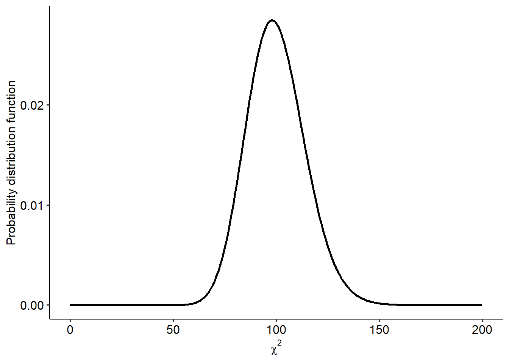

7.5 One-way repeated measures ANOVA
The second form of ANOVA that we will cover in this module is the repeated measures ANOVA (sometimes abbreviated as RM-ANOVA). While it shares many features with the basic one-way ANOVA, the nature of repeated measures data introduces some key differences in the interpretation and calculation of this test.
7.5.1 Repeated measures ANOVAs
In principle, a repeated-measures ANOVA is very similar to the paired-samples t-test: both are repeated measures versions of their respective between-groups versions. So naturally, repeated-measures ANOVAs are used when we test one sample two or more times (again, like a regular ANOVA, it’s typically for 3+ times but can be used for two).
It shares many similarities with the basic one-way ANOVA, albeit with one additional step in calculation: because we now test the same sample repeatedly, we need to account for variance within subjects. We won’t go too into detail about how that’s calculated here, but essentially we split within-groups variance into subject variance and error/residual variance. This essentially adds an extra step to the ANOVA table.
7.5.2 Example data
In this example, we’ll use a dataset derived from McPherson (2005). This is a subset of data where children were scored on their ability to play songs from memory over three years - 1997 - 1999. We’re interested in seeing whether this change over time is significant - therefore, time (3 levels) is our independent variable, while playing from memory is our dependent variable.
## Rows: 95 Columns: 4
## ── Column specification ──────────────────────────────────────────────────────────────────────────────────
## Delimiter: ","
## dbl (4): Participant, PFM_97, PFM_98, PFM_99
##
## ℹ Use `spec()` to retrieve the full column specification for this data.
## ℹ Specify the column types or set `show_col_types = FALSE` to quiet this message.For further analyses, we’ll shape this into long format:
7.5.3 Assumption checks
There are two main assumptions for a repeated-measures ANOVA. Note that while the independence assumption as we know it doesn’t apply here (by definition, repeated data is dependent), good experimental design should still aim to ensure that participants are independent of each other.
- The residuals should be normally distributed.
Our usual tests apply here too. Below is a QQ plot, which might suggest that our residuals aren’t normally distributed. (Use the data and perform a SW test on it to see what happens!)
aov(memory_score ~ time, data = w9_memory) %>%
broom::augment() %>%
ggplot(aes(sample = .std.resid)) +
geom_qq() +
geom_qq_line()## Warning: The `augment()` method for objects of class `aov` is not maintained by the broom team, and is only supported through the `lm` tidier method. Please be cautious in interpreting and reporting broom output.
##
## This warning is displayed once per session.
- The sphericity assumption. Sphericity is assumed if, the variances of the differences between each level of the IV are equal. Think of it as a form of the equality of variances assumption, where we assumed that the variances within groups were equal. The sphericity assumption applies to the differences between T1 and T2, then T2 and T3… etc etc.
Note that sphericity only applies when you have at least 3 levels of your IV (i.e. 3 timepoints). We can formally test it using Mauchly’s test of sphericity. If sphericity is violated, it means that our degrees of freedom are too high for the data, which inflates the Type I error rate.
What next? We need to apply a correction to the omnibus ANOVA, which will alter the p-value. There are two on offer: Greenhouse-Geisser and Huynh-Feldt corrections. To help decide which one to use, R also calculates a value called epsilon (\(\epsilon\)). Epsilon, in short, is a measure of sphericity; if sphericity is assumed, \(\epsilon\) = 1. If \(\epsilon\) is below 1, sphericity is violated; the smaller it is, the greater the violation and therefore the greater the correction needs to be. Therefore, these corrections alter the degrees of freedom for each test to account for this higher error rate.
(Mathematical note; the corrected dfs are calculated by multiplying the original dfs by \(\epsilon\). So e.g. if your original df is 10 and \(\epsilon\) = 0.9, your new corrected df will be 9.)
Broadly:
- If epsilon (\(\epsilon\)) > .75, use the Huynh-Feldt correction.
- If epsilon (\(\epsilon\)) < .75, use the Greenhouse-Geisser correction.
Here, our epsilon value is high (~.95), so let’s apply the Hyunh-Feldt correction.
7.5.4 ANOVA output
R-Note: Repeated measures ANOVAs in R are not trivial in the slightest, and adapting this was a genuine challenge. To some extent this probably reflects the differences in approach between point-and-click software compared to actually having to code the anova model: the former is easy but you perhaps make many assumptions about what’s going on along the way. Below is the easiest way to run this analysis.
Here’s our overall output from the ANOVA. It looks (and reads) pretty much the same as our previous example, but just bear in mind that the top row in the within-subjects effect (i.e. the effect of interest). In addition, this time you can see that there are now three rows to be read:
w9_memory_aov <- w9_memory %>%
anova_test(dv = memory_score, wid = Participant, within = time)
w9_memory_aov## ANOVA Table (type III tests)
##
## $ANOVA
## Effect DFn DFd F p p<.05 ges
## 1 time 2 188 132.625 1.19e-36 * 0.231
##
## $`Mauchly's Test for Sphericity`
## Effect W p p<.05
## 1 time 0.939 0.054
##
## $`Sphericity Corrections`
## Effect GGe DF[GG] p[GG] p[GG]<.05 HFe DF[HF] p[HF] p[HF]<.05
## 1 time 0.943 1.89, 177.21 1.05e-34 * 0.961 1.92, 180.72 2.45e-35 *Knowing which row to read is crucial here, as each one corresponds to a correction (or the original ANOVA). Here, our p-value is almost significant (p = .054); rather than going by a strict arbitrary cutoff, let’s assume that it has been violated (both for teaching and for methodological purposes). The associated epislon value is \(\epsilon = .943\); when reporting the repeated measures ANOVA we need to look at the rows corresponding to the Huynh-Feldt correction.
The two columns to look for are the ones labelled DF[HF] - this gives
the adjusted degrees of freedom with the Huynh-Feldt corrections
(DF[GG] would give Greenhouse-Geisser dfs) - and p[HF], which gives
the adjusted p-value. Thus, with the corrected output we can see our
effect of time is significant (F(1.92, 180.72) = 132.63, p < .001).
7.5.5 Post-hoc tests
As per usual, we follow up a significant overall ANOVA with a series of
post-hoc comparisons (note this time we set paired = TRUE:
From this, we can see that all three means are significantly different from each other (p < .001, for brevity’s sake). Scores increased year on year, i.e. 1997 < 1998 < 1999.
7.5.6 Alternative using car::Anova()
Below is an alternative way of running a repeated measures ANOVA, this
time using the car package. The function factorial_design() from the
rstatix package is a useful helper function that can generate the
necessary arguments to Anova() for repeated measures tests.
w9_memory_design <- factorial_design(
data = w9_memory,
dv = memory_score,
within = time,
wid = Participant
)The important things that are generated by this function are:
name$model: this essentially creates an ANOVA modelname$idata: this specifies the levels of the within-subject (repeated measures) factorname$idesign: this creates a formula-style notation specifying what the within-subjects IV(s) are
We then just need to feed this to car::Anova() as follows. Setting
type = 3 isn’t strictly necessary here (this is more relevant for
factorial ANOVAs):
w9_memory_alternate <- car::Anova(
mod = w9_memory_design$model,
idata = w9_memory_design$idata,
idesign = w9_memory_design$idesign,
type = 3
)Now that we’ve built our ANOVA model we can ask for the output like so.
multivariate = FALSE is just an argument to specify that we’re doing a
univariate analysis (i.e. one dependent outcome).
##
## Univariate Type III Repeated-Measures ANOVA Assuming Sphericity
##
## Sum Sq num Df Error SS den Df F value Pr(>F)
## (Intercept) 3490869 1 259027 94 1266.83 < 2.2e-16 ***
## time 98948 2 70130 188 132.63 < 2.2e-16 ***
## ---
## Signif. codes: 0 '***' 0.001 '**' 0.01 '*' 0.05 '.' 0.1 ' ' 1
##
##
## Mauchly Tests for Sphericity
##
## Test statistic p-value
## time 0.93912 0.053894
##
##
## Greenhouse-Geisser and Huynh-Feldt Corrections
## for Departure from Sphericity
##
## GG eps Pr(>F[GG])
## time 0.94261 < 2.2e-16 ***
## ---
## Signif. codes: 0 '***' 0.001 '**' 0.01 '*' 0.05 '.' 0.1 ' ' 1
##
## HF eps Pr(>F[HF])
## time 0.9612827 2.447568e-35